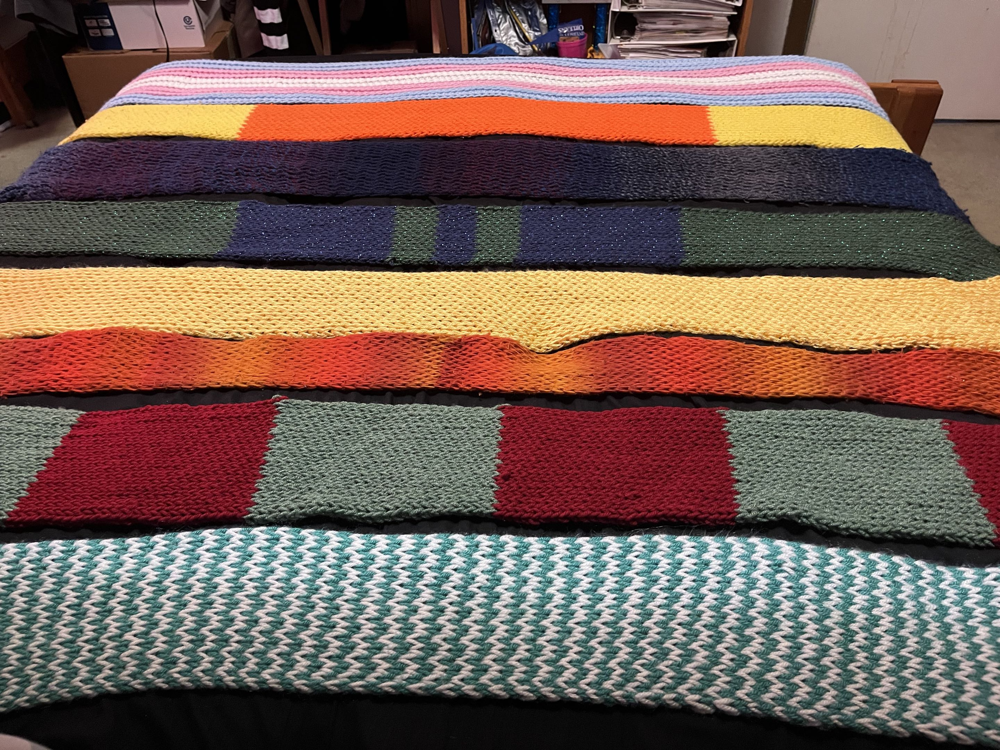

Crochet Projects
-
Scarfs
In 2023 I made my first scarf using a loom tool. Since then I made a lot more scarfs, only slowing down after I got more into crochet in 2024. In fact, ever since I've gotten into crochet I've only made one new scarf, which was also my first crochet made scarf!

-
Plushies
Overtime I have sold of many kinds of plushies.
-
Flowers
Flowers are quite unique and often require some special technicques to make, but are incredibily rewarding. Jarona!
-
Clothing
A field of crochet I have just begun experimenting in.